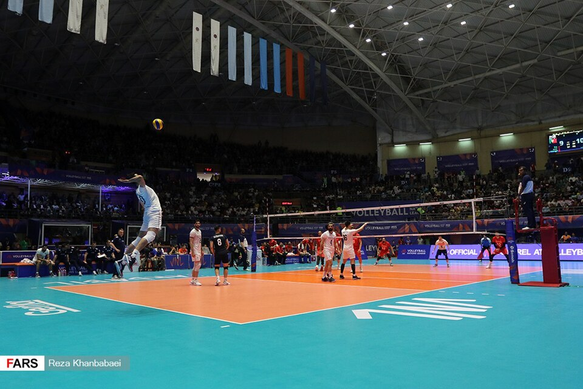

Основы игры
Правила волейбола
Волейбол - командная игра, в которой нужно отправить мяч через сетку так, чтобы он коснулся площадки соперника, и не позволить ему упасть на своей стороне.

Площадка и счёт
На площадке каждой команды одновременно находятся шесть игроков. Матч состоит из партий: обычно для победы нужно выиграть три партии. Первые четыре партии играются до 25 очков, решающая - до 15, с преимуществом минимум в два очка.
- Команда выигрывает розыгрыш и получает очко.
- Если подающая команда выиграла, она продолжает подавать.
- Если очко получила принимающая команда, она получает право подачи и выполняет переход позиций.
Как проходит розыгрыш
Команда может коснуться мяча не более трёх раз, чтобы вернуть его через сетку. Блок не считается одним из этих касаний. Один игрок не может касаться мяча дважды подряд, кроме некоторых игровых ситуаций, например касания блока.
- Чаще всего три командных касания - это:
- приём подачи или атаки;
- передача связующего;
- нападающий удар.
- Мяч считается в игре, пока не коснётся пола или не будет зафиксирована ошибка.
Полные официальные правила можно посмотреть на сайте Международной федерации волейбола (FIVB).
Памятка по правилам
| Элемент | Пояснение | Подробнее |
|---|---|---|
| Команды перебрасывают мяч через сетку. | Розыгрыш | |
| Счёт | Очко присуждается после каждого розыгрыша. | Правила FIVB |